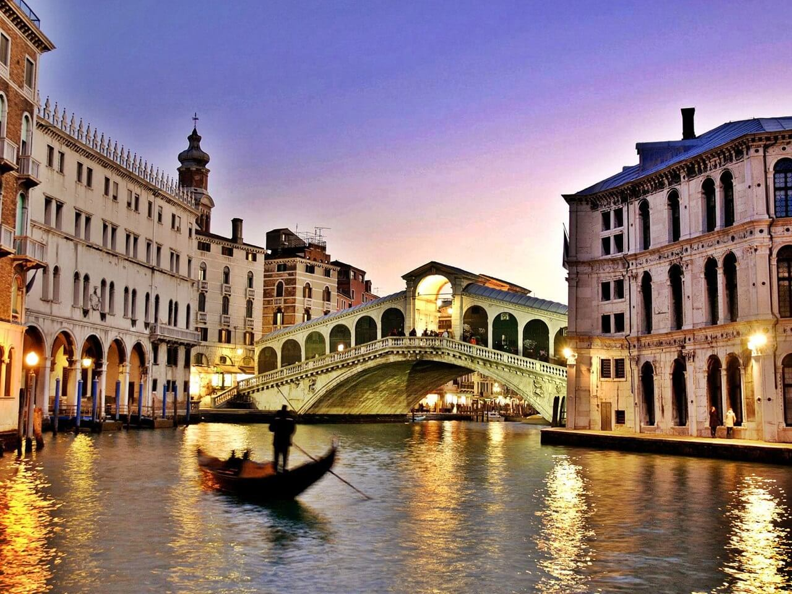

The Colosseum was the largest amphitheatre in the Roman Empire and remains one of the most impressive buildings ever constructed
The Roman Forum was once the religious and political heart of the empire. Today, it’s a series of fascinating ruins and arches sitting smack dab in the middle of downtown Rome, in Campitelli
The Pantheon is one of the great architectural achievements of the ancient world. Located in the northwest corner of Pigna

The Vatican is the most essential museum to visit on an Italy vacation in Rome, but there are others that should occupy some of your time, including the Galleria Borghese.

Whether it actually brings you good fortune is up for debate, but a visit to the Trevi Fountain and the prerequisite coin toss is an essential part of exploring Rome on your Italy vacation.
Like me, you might think it’s curious that one of Rome’s most iconic sites is called the Spanish Steps, but there’s no denying that it’s a beautiful staircase in the heart of the city’s cultural centre
Italy has been one of the most popular travel destinations for tourists from the world over. Culture, beauty, food, history, this small European country has it all and the reasons to visit Italy are endless.
Italian food is definitely one of the reasons to visit Italy. Here too, region after region you will discover new flavours, recipes, ingredients, cheese, like Pecorino or Fossa cheese, bread, sauces and much more.
You need to visit Italy at least once in your life just because it’s a must-see destination. Not to brag about it, but with so much art, history and beauty, Italy has been a favourite destination for years.
La Dolce Vita It's no surprise that La Dolce Vita is an Italian phrase. After all, it's an Italian idea! Italians claim to have mastered the art of living by perfecting an ideal mixture of food, family, and famous good humor.